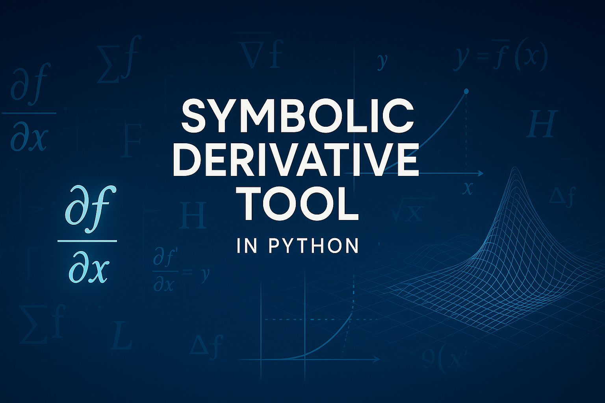

In both machine learning and scientific computing, derivatives are at the core of optimization, analysis, and inference. While numerical differentiation is common, it can be unstable or inaccurate when dealing with complex functions or symbolic models.
To address this, we've developed the Symbolic Derivative Tool, a Python-based utility leveraging Python's Abstract Syntax Tree (AST) to provide symbolic derivatives, gradients, Jacobians, and Hessians — all without relying on external libraries like SymPy. This tool bridges the gap between symbolic mathematics and practical data science workflows.
Understanding the fundamental mathematical operations supported by this tool helps reveal its power and relevance:
The tool symbolically computes limit expressions, helping users explore function behavior near discontinuities or singularities. This is crucial in mathematical analysis and neural network activation boundary checks.
The core operation, derivative computation, is essential in optimization algorithms, from simple linear regression to complex gradient descent in deep learning.
A gradient is a vector of partial derivatives. In machine learning, gradients drive learning via backpropagation to adjust weights in neural networks.
The Hessian is a square matrix of second-order partial derivatives. It describes local curvature and is crucial in second-order optimization algorithms like Newton’s Method.
The Jacobian matrix represents partial derivatives of vector-valued functions and is critical in transformations, inverse functions, and deep learning architectures like attention mechanisms and GANs.
Taylor series approximates complex functions using derivatives at a point. In ML, it's used in model interpretability, error estimation, and theoretical analysis.
The Laplacian sums second-order partial derivatives. It appears in physics (e.g., heat/diffusion equations), and graph-based ML for smoothness/regularization.
This measures how a function changes in any direction, used in constrained optimization, reinforcement learning, and optimization landscapes.
In logistic regression, gradients are used to update the model's coefficients through gradient descent. This tool can symbolically show how each feature contributes to the update.
In neural networks, the backpropagation algorithm relies on gradients and Hessians. This tool can demonstrate how each weight's partial derivative is computed and how second-order curvature affects learning rate schedules in advanced optimizers like AdaHessian or Newton's method.
git clone https://github.com/hincaltopcuoglu/Symbolic-Derivative-Tool.git cd Symbolic-Derivative-Tool
pip install -r requirements.txt
python derivative_tool.py
When you run the tool via:
python derivative_tool.py
you'll be prompted step-by-step to symbolically analyze your function. Here's a sample interaction:
Enter a function (e.g. f(x, y) = x2 + y2): f(x, y) = x2 + 3xy + y2 Differentiate with respect to: x Enter values for variables (e.g. x=1, y=2): x=1, y=2
🧪 Select an operation to perform: 1. Compare Derivative Approximations (Limit-based) 2. Compute Gradient 3. Compare Gradient with Numerical Derivatives 4. Compute Hessian Matrix 5. Compute Laplacian 6. Taylor Series 7. Compute Directional Derivative 8. Symbolic Chain Rule Expansion 9. Exit
from symbolic_diff import SymbolicDifferentiator
expr = "x2 + 3xy + y2" sd = SymbolicDifferentiator(expr, variables=["x", "y"])
print("Gradient:", sd.evaluategradient(x=1, y=2)) print("Hessian:", sd.evaluatehessian(x=1, y=2))
Output:
Gradient: {'x': 9.0, 'y': 8.0}
Hessian: [[2.0, 3.0], [3.0, 2.0]]
The Symbolic Derivative Tool is ideal for anyone working at the intersection of theory and code. Whether you're teaching calculus, optimizing a loss function, or debugging a model's learning trajectory, symbolic differentiation gives you transparency and control.
We welcome contributions and feedback from the community!
✨ GitHub: Symbolic-Derivative-Tool
✌️ Created by: Hincal Topcuoglu